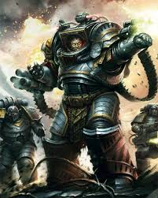

Perturabo
O Primarca da IV Legião, os Iron Warriors, é uma das figuras mais complexas e trágicas de Warhammer 40k. Perturabo, o "Senhor do Ferro", é o mestre supremo da guerra de cerco, da arquitetura e da engenharia, mas sua genialidade sempre foi obscurecida por uma personalidade amarga e um profundo sentimento de rejeição.
Quem é Perturabo?
Perturabo caiu no planeta Olympia, um mundo de cidades-estado montanhosas e fortalezas impenetráveis. Desde o momento em que abriu os olhos, ele possuía um intelecto sobre-humano e uma habilidade inata de entender como qualquer coisa funcionava, desde um relógio até uma cidadela. Diferente de seus irmãos, que tiveram infâncias de aprendizado, Perturabo sentia que já sabia de tudo. Ele foi adotado pelo tirano de Lochos, mas nunca sentiu amor ou conexão com ninguém. Além disso, ele sofria de uma maldição única: ele podia ver a Eye of Terror (Olho do Terror) no céu o tempo todo, um segredo que o assombrava e aumentava sua paranoia.
Características e Personalidade
O Mestre da Logística e Exatidão: Ele via a guerra como uma equação matemática. Suas vitórias não vinham de fúria ou glória, mas de cálculos precisos, bombardeios coordenados e desgaste absoluto.
Complexo de Mártir: Ele aceitava as missões mais ingratas e brutais da Grande Cruzada (como limpar trincheiras ou guarnecer postos remotos), mas odiava o fato de não receber o reconhecimento que achava merecer. Ele sentia que era o "burro de carga" do Imperador.
Crueldade Fria: Ao assumir sua Legião, ele ordenou uma decimação (matar um em cada dez de seus próprios soldados) apenas porque o histórico deles não era "perfeito". Ele não tolerava falhas.
Rivalidade com Rogal Dorn: Sua maior obsessão era provar que era melhor que Dorn (Primarca dos Imperial Fists). Enquanto Dorn era o "Escudo do Imperador", Perturabo queria ser o martelo que quebraria esse escudo.
Grandes Feitos
A Conquista de Olympia: Ele unificou seu mundo natal não através de diplomacia, mas através de uma engenharia militar tão superior que a resistência se tornou logicamente impossível. Ele transformou Olympia em uma fortaleza planetária.
O Cerco de Terra: Embora Horus fosse o líder da rebelião, Perturabo foi o cérebro tático por trás do ataque ao Palácio Imperial. Foi ele quem coordenou o bombardeio, desmantelou as defesas de Rogal Dorn e transformou o cerco em uma máquina de moer carne. Sem Perturabo, Horus jamais teria chegado aos portões do Palácio.
The Iron Cage: Após a derrota de Horus, Perturabo preparou uma armadilha para Rogal Dorn. Ele construiu uma fortaleza incrivelmente complexa chamada "Eterna Fortitude". Os Imperial Fists atacaram com fúria, mas foram massacrados taticamente por Perturabo. Foi uma vitória psicológica devastadora que forçou os Imperial Fists a aceitarem o Codex Astartes para sobreviverem.
Ascensão a Príncipe Demônio: Após o massacre da Jaula de Ferro, Perturabo sacrificou o Progene (material genético) dos Imperial Fists capturados para os Deuses do Caos, ascendendo à forma de Príncipe Demônio do Caos Indiviso.
Atualmente: Perturabo governa o "Mundo de Ferro" de Medrengard dentro do Olho do Terror. Diferente de outros Primarcas demoníacos que se tornaram escravos de seus deuses, Perturabo usa o Caos como uma ferramenta. Ele continua a fabricar armas terríveis e máquinas de guerra demoníacas.
Estilo de Combate
- Artilharia pesada e bombardeios constantes
- Guerra de atrito e desgaste psicológico